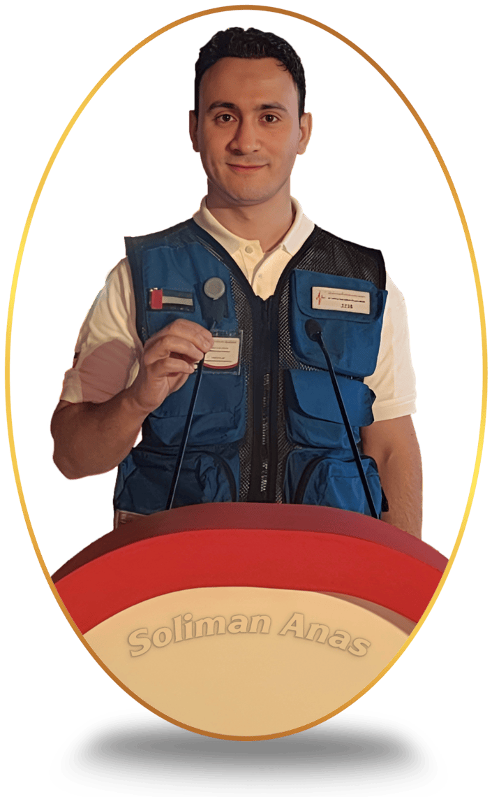

📘 About This Application

This is a study aid for the Dubai Corporation for Ambulance Services (DCAS) Clinical Practice Guidelines 2025. It is designed to help EMS personnel review guidelines through summaries, flashcards, quizzes, and critical scenarios.
⚖️ Disclaimer
⚠️ Important: This application is for educational purposes only. It does not replace the official DCAS Clinical Practice Guidelines or any official memos. Always refer to the latest official DCAS documents and follow your scope of practice and local protocols.
👨⚕️ Author
Created by Soliman Anas · Emergency Medical Technician
For study aid only. Not for clinical decision‑making without verification against official sources.
📌 Features
- Four themes (Dark, Light, Sepia, Forest) – saved to your browser
- Completion tracking for chapters
- Progress dashboard with statistics
- Flashcards with 3D flip
- Quizzes with adjustable question count
- Critical scenarios with KPIs
- Full‑text search on main menu and index
📁 Version
Based on DCAS CPG Version 3 – 2025